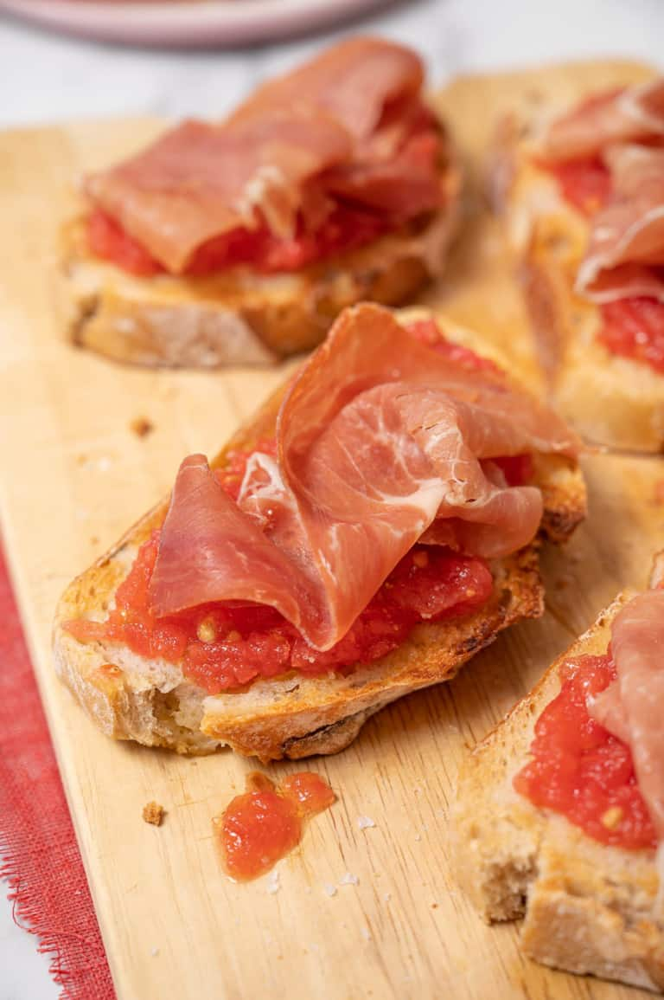

Spanish Tomato Bread

Description
In Andalusia, a tostada con tomate y jamón is the king of breakfast. Most Sevillanos will enjoy a delicious toast topped with crushed tomato, olive oil, and either jamón Serrano or local jamón ibérico. It’s one of my favorite Spanish breakfasts!
Ingredients
Bread
Olive oil
Tomatoes
Sea Salt
Ham (optional)
Ingredient notes & Subtitutions
Bread: The most important thing is that you use good bread — ideally something hearty that can stand up to plenty of olive oil and tomato juice. In Catalonia we often use a hearty rustic “country” bread or a thin “glass bread” that nearly shatters apart. Both are delicious.
Tomatoes: Again – quality is KEY here. In Catalonia there are very special local tomatoes that will spread like butter. But outside of the region we just use the best, juciest tomatoes we can find.
Extra Virgin Olive Oil: Experiment with different varieties here. You will taste the olive oil here so be sure to use the very best quality you can find. I love a fruity arbequina or spicy picual. If I can find something unfiltered, even better!
Sea Salt: Another must. And if you can find Flor de Sal, get some!
Toppings: To make your pan con tomate more of a meal, you can get creative. Some classic Spanish combos are:
Jamón or other cured meats like lomo or fuet
Anchovies: both salt cured and marinated (boquerones en vinagre). If you use one of each it’s called a “matrimonio” (marriage).
Cheese: A simple slice of cheese can make the perfect match
Steps
Steps 1-2: Start by toasting your bread. You can use the toaster or the oven.
Steps 3-4: Next, grate the tomato into a bowl.
Steps 5-6: Add the olive oil and salt to season the grated tomato.
Steps 7-8: Rub the toasted bread with raw garlic (optional) and then spread the tomato sauce.
Steps 9-10: Finally, drizzle a bit more extra virgin olive oil and sprinkle some sea salt. Enjoy!
Return to main page